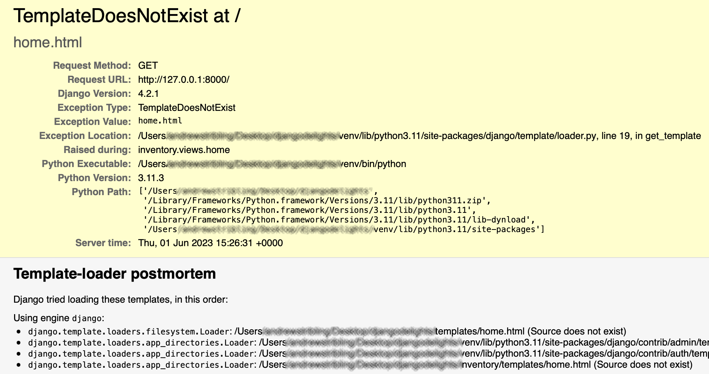
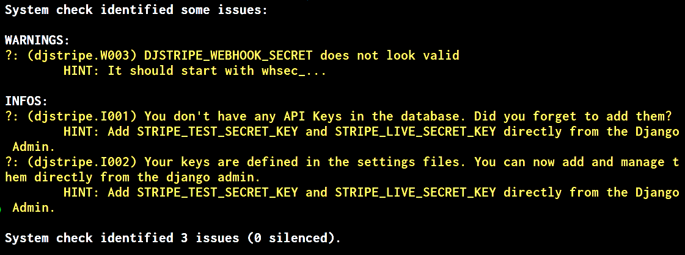
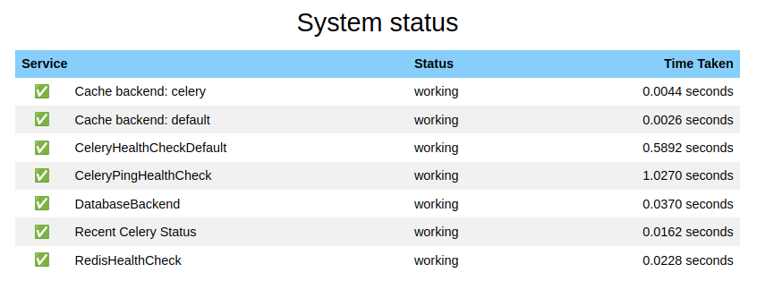
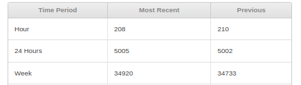
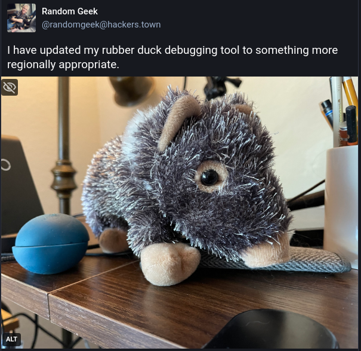

Troubleshooting is a Lifestyle 😎
Jack
Jack
- Managing Director of Watervize 💧
Jack
- Managing Director of Watervize 💧
- Radar Maintenance Officer
Jack
- Managing Director of Watervize 💧
- Radar Maintenance Officer
- Husband 🌈
Jack
- Managing Director of Watervize 💧
- Radar Maintenance Officer
- Husband 🌈
- Father
Jack
- Managing Director of Watervize 💧
- Radar Maintenance Officer
- Husband 🌈
- Father
My Background
- Programming
- Radar
- Electronics
My Experience
- Programming
- Radar
- Electronics
- Mechanical & Power Systems
- Digital & Analog Electronics
- RF
- Optical Fiber
- Software (desktop/web/embedded)
- Networks
Goals
A bad experience
WIIFM?
With the right techniques, tools, and indicators, you can always find a suitable approach to troubleshooting and avoid pitfalls.1. Terminology
Some Terms
Problem solving: Broadly describes working through a real or conceptual problem to reach a feasible solution.
Some Terms
Troubleshooting: Subset of problem solving for...
- recognizing
- locating
- resolving
...a specific issue in hardware, software, or elsewhere,
Some Terms
Troubleshooting: Subset of problem solving for...
- recognizing
- locating
- resolving
...the cause of that issue,
Some Terms
Troubleshooting: Subset of problem solving for...
- recognizing
- locating
- resolving
...and finding a solution to resolve it.
Some Terms
Debugging: Troubleshooting that is specific to software and programming.
2. The Troubleshooting Mindset
Troubleshooting isn't just a skill.
It's a mindset - a lifestyle 😎!
Troubleshooting: A Lesson from Curious George
Troubleshooting is everywhere!
- Medicine
- Aviation
- Military
- Tech
Persistence and curiosity
The two most important traits of any good troubleshooter.
3. Indicators and Resources
"If your only tool is a hammer then every problem looks like a nail"
- Abraham Maslow
Indicator Categories
- Built-ins vs Extras
- Alert vs Status
- Qualitative vs Quantitative
- Affirmative vs Negative
Indicators
- Example: Car
- Built-in: dials, gauges, dashboard lights
- Extras: CAN bus tool, tire gauge, fuse tester
Indicators
- Example: Houseplant
- Built-in: leaf color, wilting, moisture of soil
- Extras: moisture meter, temperature sensor
Indicators
- Example: Lady Duchess
- Built-in: level of cuddliness, rate of treat consumption
- Extras: GPS collar which logs location, step count, and hours of sleep

While it may be surprising, these same principles also apply to troubleshooting software and systems!
Tools and Indicators built into Django
Tools and Indicators built into Django
Template error pages
Tools and Indicators built into Django
Django error reporting (email)
DEBUG = False
ADMINS = [
("John", "john@example.com"),
("Mary", "mary@example.com"),
]
Tools and Indicators built into Django
System checks framework
- Async support
- Caches/Database
- Model/File fields
- Related fields
- Models
- Security
- Templates
- Translation
- URLs
- contrib.admin
- contrib.auth
- and more!
Tools and Indicators built into Django
System checks framework
It's extendable!
Tools and Indicators built into Django
The console and Logging
Extra context and verbosity.
Tools and Indicators you can add to Django
Tools and Indicators you can add to Django
django-debug-toolbar
Tools and Indicators you can add to Django
Performance Profilers - django-silk
Tools and Indicators you can add to Django
Error tracking and performance monitoring
Sentry
Tools and Indicators you can add to Django
Error tracking and performance monitoring
- Rollbar
- Newrelic
- Honeybadger
- Bugsnag
- Raygun
Tools and Indicators you can add to Django
Health Checks
Tools and Indicators you can add to Django
Health Checks
- django-health-check
- django-watchman
Tools and Indicators you can add to Django
Extend the Admin!
4. Breaking Down Problems
Big problems are just a series of smaller problems waiting to be solved.
The power of isolating variables & narrowing scope
Strategies for Dissecting Complex Issues
Isolate the problem into smaller, testable pieces.
- Idempotent functions and methods
- Performing only one task per block of code
- Makes it easier when asking for help
Strategies for Dissecting Complex Issues
Pull out those smaller, testable pieces.
Debugging
"We did develop the one word that’s in the language today, which is ‘breakpoint’, at that time. Because we actually did pull the wire to stop the programs [...] we actually broke the point, and that was where the word came from.”- Frances Elizabeth Holberton
Python Debugger (PDB)
Use the Python debugger to step through your code and find the issue.
Most IDEs have an integrated debugger.
5. Avoiding Tunnel Vision
It's easy to get fixated on one symptom or potential solution.
Step back and re-evaluate periodically.
Consider the possibility that...
- you made incorrect assumptions
- you missed an important symptom
- the problem is not what you think it is
- the problem is not where you think it is
- there is more than one problem 😬
Broad perspectives and alternative approaches
Consider consulting someone outside your field or reaching out for help when you're stuck.
6. Asking for Help
"A problem well stated is a problem half solved.”- John Dewey
6. Asking for Help
6. Asking for Help
Knowing when to seek assistance
- You are hopelessly stuck & frustrated
- Want a new perspectives
- Seeking greater/different experience
- A fresh pair of eyes
Knowing when to seek assistance
Asking for help is not a sign of failure—it's a strategy.
How to Effectively Ask for Help
- Provide context: Explain the problem clearly.
- Be specific: Share code snippets, error messages, and what you've tried.
- Don’t assume the problem is obvious to others.
- Be open to suggestions and feedback.
Minimal Reproducible Example (MRE)
People want to help you.
For free, even!
But...
Nobody likes wasting their time or feeling used.
No 😩
"I am using Django and I want to upload a file. I have created a model and a form, but I get errors when I try to upload a file."
No 😩
"I am using Django and I want to upload a file. I have created a model and a form, but I get errors when I try to upload a file."- What version of Django/Python are you using?
- What error message are you getting?
- What does your code look like?
- What is the expected behavior?
- What have you tried so far?
Consider how your problem looks to someone who has never seen your project before.
What would they need to know to help you?
Yep 😊
I am using Django 5.0 and I am trying to create a form to upload a file. I created a model with a FileField, and a form with a FileField, but when go to the view in my browser, the form isn't shown.Here is the relevant code...
Yep 😊
# models.py
class MyModel(models.Model):
file = models.FileField()
# forms.py
class MyForm(forms.ModelForm):
class Meta:
model = MyModel
fields = ['file']
# views.py
def my_view(request):
template = 'my_template.html'
if request.method == 'POST':
form = MyForm(request.POST, request.FILES)
if form.is_valid():
form.save()
return redirect('my_view')
else:
form = MyForm()
return render(request, template, {'form': form})
# template:
Oh, no 😩
"My view is not working. I am trying to create a view that will display a list of all objects in a model, but it doesn't work."
def my_view(request):
objects = MyModel.objects.all()
return render(
request, 'my_template.html', {'objects': objects}
)
Oh, no 😩
- What does "doesn't work" mean?
- What error message are you getting?
- What does your code look like?
- What is the expected behavior?
- What have you tried so far?
Yep 😊
I am trying to create a view that will display a list of all the objects in a model, but when I try to access the view in my browser, it returns a 500 error, and I am not sure why.
Here is the error message I am getting:
Traceback (most recent call last):
File "/path/to/project/views.py", line 10, in my_view
objects = MyModel.objects.all()
NameError: name 'MyModel' is not defined
Yep 😊
Here is the project code:
# models.py
class MyModel(models.Model):
name = models.CharField(max_length=255)
# views.py
def my_view(request):
objects = MyModel.objects.all()
return render(
request, 'my_template.html', {'objects': objects}
)
I read the django docs about models, but I'm not sure what's wrong. How can I fix this?
Where to get help
- "Using Django” section of The Django Forum *
- The Django Ticket Tracker
- Social Media (Mastodon & that other place)
- /r/django & /r/djangolearning on Reddit
- Stack Overflow (multiple 'django' tags)
- Django Discord *
- #Django IRC channel on Libera.chat
7. Documenting The Process
Write it down! A troubleshooting log is your best friend.
Writing Down Your Troubleshooting Process
Document each step:
- What was the problem?
- What did you try?
- Why did you try that?
- What did you expect to see?
- What was the outcome?
- What else might you try?
8. Review
- Use tools and indicators
- Break down problems
- Avoid tunnel vision
- Ask for help effectively
- Document everything
The more effectively you troubleshoot, the better you will become at it.